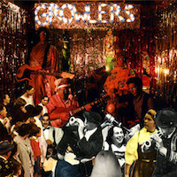
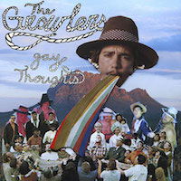
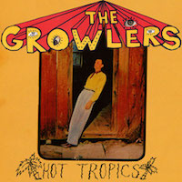
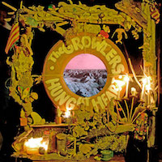

Click the images to learn more about the artist. Photo taken by shanesless via Flickr.
The Growlers were formed in California in 2006. Over the years The Growlers they have created over a dozen albums and have even created their own music festival known as Beach Goth. The festival was formed in 2012 and is now called The Growlers Six. Their sound is unique and resonates with a niche audience, but their fanbase continues to grow and they are now more popular than ever.
"Some will float and some will sink, there's only one way to find out." - The Growlers




The Growlers song "One Million Lovers" from their album Hung at Heart.
The Growlers "Gay Thoughts" from their album Gay Thoughts.
The Growlers "Wet Dreams" from their album Are You In Or Are You Out?
The Growlers "What It Is" from their album Hot Tropics.